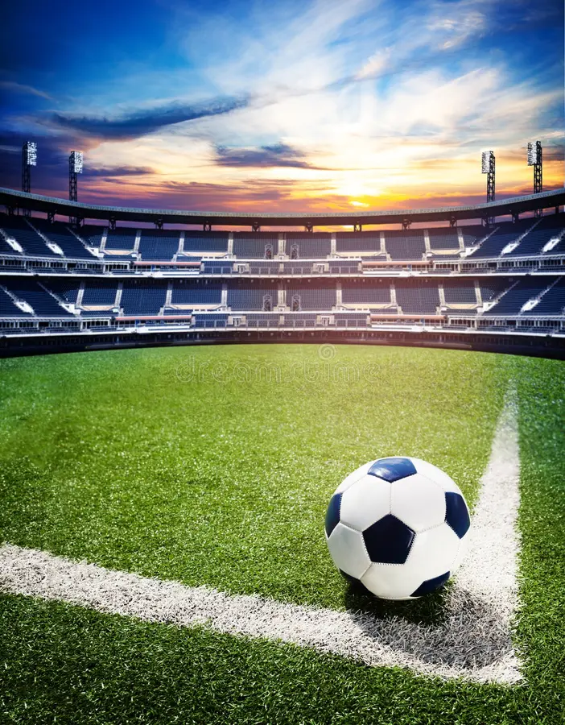

O que é esse torneio?
A Copa do Mundo é uma competição internacional que acontece a cada quatro anos. É o momento em que o planeta para para ver as melhores seleções disputando a maior competição da história.

Maiores Campeões
Algumas seleções já fizeram história e levantaram o caneco várias vezes. O maior campeão da competição é o Brasil, o único pentacampeão!
Ranking dos Top 3:
- Brasil (5 títulos)
- Alemanha (4 títulos)
- Itália (4 títulos)
O que não pode faltar na Copa?
- Álbum de figurinhas
- Bandeiras nas ruas
- Vuvuzelas e cornetas
Saiba mais
Você pode conferir as notícias oficiais diretamente no site da federação.
Visite o site da FIFA.